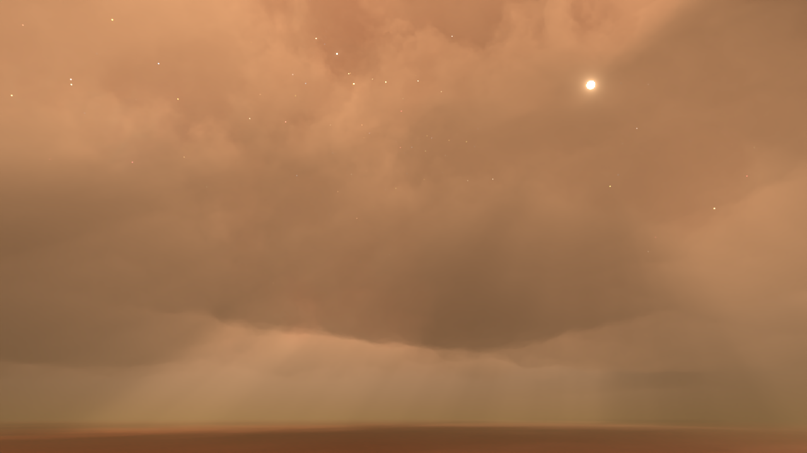
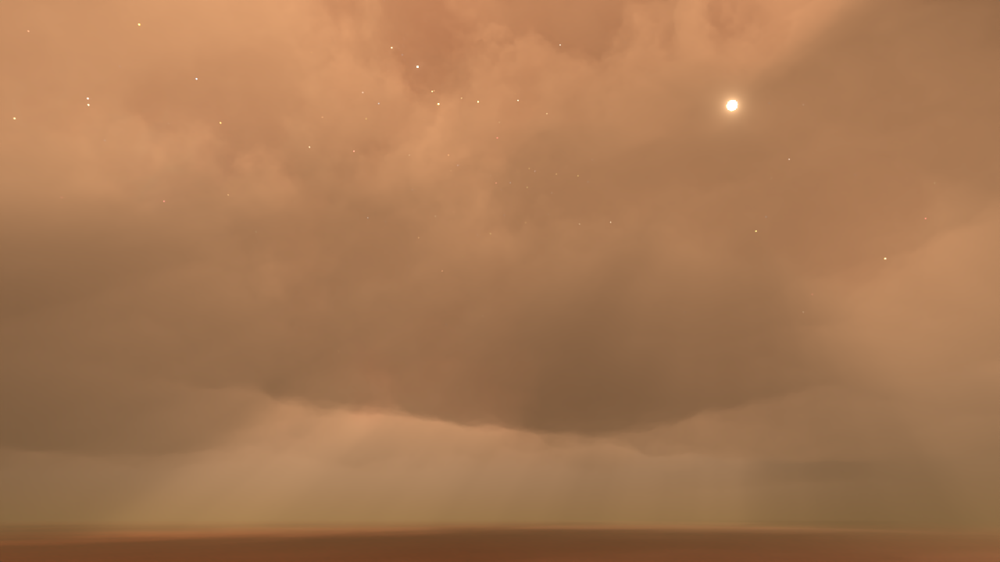

Creating Space Skyboxes - Part 2
27 May 2022
In the previous dev blog, I went through the process of creating space skyboxes with stars and nebulae using Blender. In this dev blog, I will be expanding this by creating planetary skyboxes, with atmospheres and clouds.
Make sure you check out Part 1 of this blog, since I will be referencing some parts of it here.

Note that the purpose is not to create accurate atmospheres and clouds based on atmospheric composition, this is purely for artistic purposes.
Setting Up the Project
First, let's set up the basics of the project. I have imported the same camera setup used for the nebula skyboxes created in the previous blog.
Next, let's go to the Render Properties. Make sure that the Render Engine is set to Cycles. In the Volumes section, we want to decrease the Step Rate Render value to something like 0.1. Decreasing this value will give us more detail in our volumes, which is especially important for clouds. I also double the Max Steps value from 1024 to 2048.
Adding the Space Skybox
Now let's add one of the space skyboxes from the previous blog. Unfortunately Blender has no easy way of using a 6-sided skybox as a background (i.e. in the World shader), however we can simply make our own skybox by making a large inside-out cube. You'll also need to make sure in the Ray Visibility settings of the Object Properties to uncheck everything except for Camera, which will ensure the skybox doesn't actually affect the lighting in the scene.
It's easiest to set up a skybox if you combine all 6 faces into a single texture. All you need to do is make sure the UVs of your cube match the layout of your texture
For the skybox material, a simple Emission shader using our skybox texture will do.
Finally, lets add our sun. The sun has 2 parts: the sun light and a sphere that is used as an analog for the sun. I find it useful to create a sun light and then add a sphere as a child of the light. That way, the angle of the light and the position of the sphere always match. Just like with the skybox, the sphere should have everything except for Camera unchecked in the Ray Visibility settings, so that it does not affect the lighting.
The sun material can be a simple Emission shader as well. Make sure to crank up the Strength so it will have a lot of bloom/glow.
One last thing, we also need to increase the strength of the sun light. I set it to 10 to start off, but we can always adjust this later.
Creating the Atmosphere
Now it is finally time to start creating the planet surface. It is useful to add a plane that will act as a stand-in for the ground. A simple material that is close to the average color of the ground will suffice.
Now lets finally create the atmosphere. Create a cube and scale it so that it covers the plane you created for the ground. The height of the cube is somewhat arbitrary, we will be adjusting the atmosphere's density in the atmosphere shader. Also, if you have strange banding artifacts, try lowering the bottom of the atmosphere cube so that it is below the ground plane. Blender sometimes will have artifacts when volumes intersect with other objects.
Next let's add a material to the atmosphere and use the Principled Volume shader.
The first thing we need to do is decrease the density based on the height. We can do this using a gradient texture. By default the gradient is going the wrong way, so use a Mapping node with the Generated Texture Coordinate to rotate the gradient and adjust its position. You can plug in the gradient to the Surface output to make sure it's rotated correctly. White will be high density, and black will be low density.
Let's now rearrange this to plug the Gradient into our density. A Multiply node allows us to further control the density. For the atmosphere, the density multiplier will need to be very low. Let's go ahead and render to see what it looks like.
We still have a lot of work to do but the basics are there! Let's now set up the atmopshere color. We can use a Color Ramp to color the atmosphere based on our gradient texture. I made the horizon color white, and the rest of the atmosphere blue. I also adjusted the density and increased the brightness of the sun light. Remember to always be tweaking values as you are working!
And that is basically all we need to do for our atmosphere.
Making Clouds
Now we can start adding clouds to spruce up our skybox. To start, you can simply copy the atmosphere cube. Make sure to scale down the clouds cube so it is not intersecting with the atmosphere cube. Also, we need to make a copy of the atmosphere material. We will be using a Gradient Texture just like before, however this time we will use a Color Ramp to turn it into a double-sided graident. This will allow us to control the height of our clouds.
Next let's add a Noise texture. Since our box is kind of squished, the noise texture will be squished too, so I add a Mapping node to adjust the scale and compensate for the squishing. I use another Color Ramp to control the density of the clouds. Using the Constant mode is good for clouds, since they usually have hard edges (at least when viewed from far away).
Finally we multiply the Gradient we created earlier with the noise texture. This gradient controls the noise so that we don't end up with clouds with flat tops and bottoms.
Let's take a look at a render now. Make sure you disconnect the nodes from the Surface Material Output, and instead route everything into the Density of the volume shader.
Looks pretty good! You can use a similar technique for clouds of all kinds, like these weird wispy clouds.
And there you have a relatively simple way to make planetary skyboxes, complete with an atmosphere and clouds. Of course, every planet is going to have different atmospheric properties, but this method can certainly accomodate that.
 



Use the link below to download the source .blend files for the 4 skyboxes shown above.
Due to file size restrictions the above source files do not include the pre-rendered nebula skyboxes, so if you would like to use those, please visit the previous blog to download them.